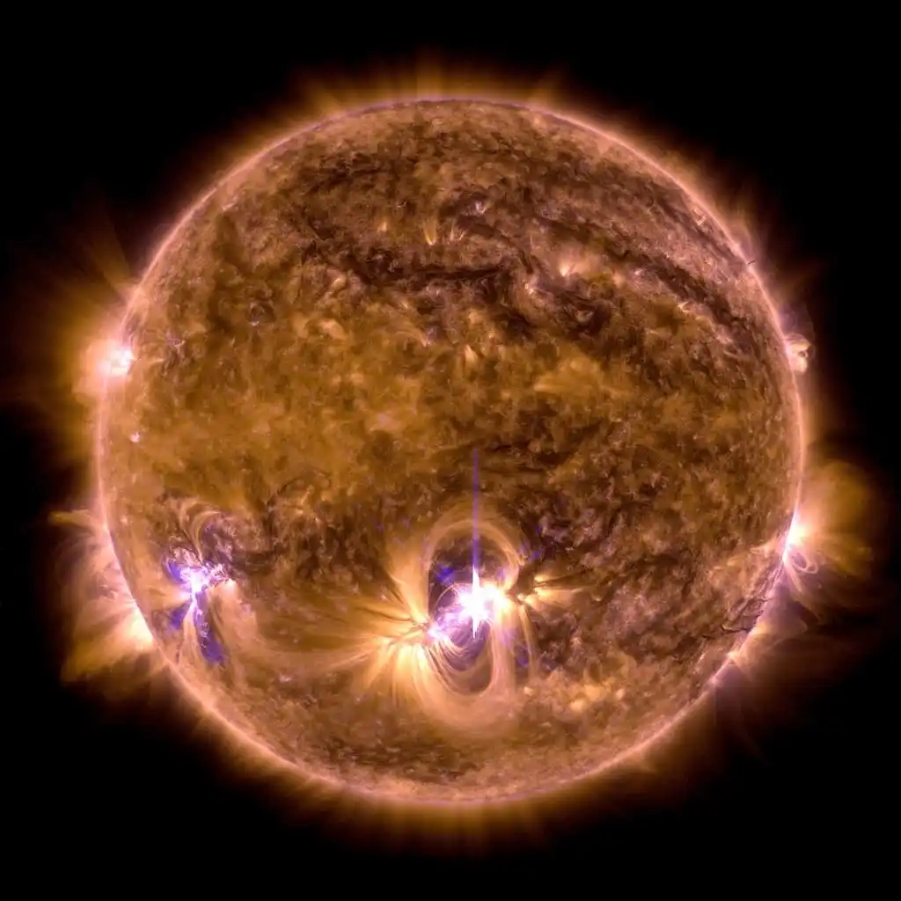
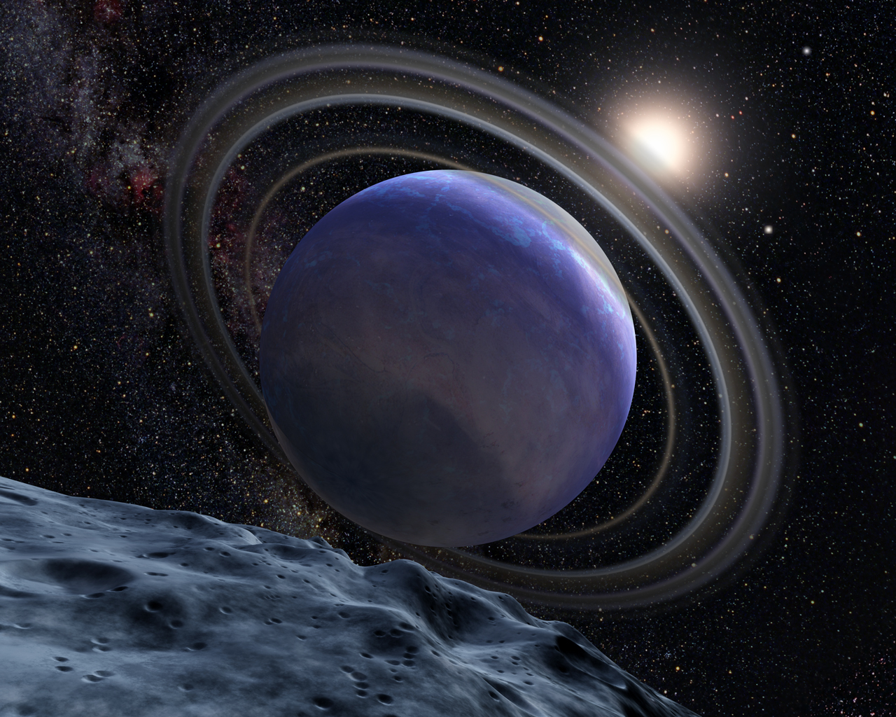
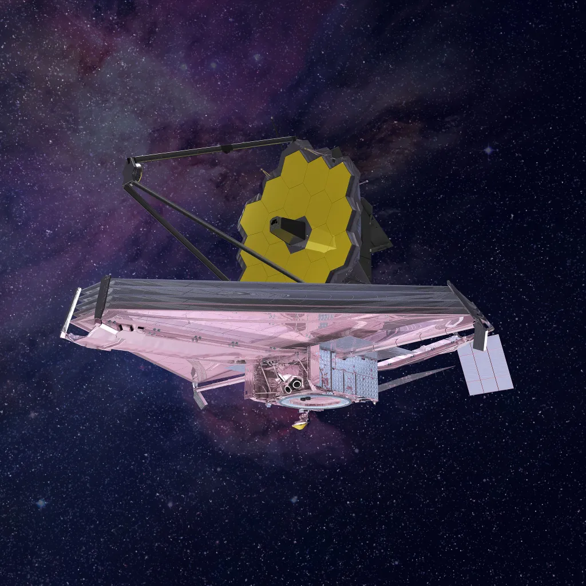

Milky Way
Our home galaxy is called the Milky Way. It’s a spiral galaxy with a disk of stars spanning more than...
Saiba Mais

Star
At first, most of the protostar’s energy comes from heat released by its initial collapse...
Saiba Mais

Exoplanets
An exoplanet is any planet beyond our solar system. Most of them orbit other stars...
Saiba Mais

James Webb
Webb is the premier observatory of the next decade, serving thousands of astronomers worldwide...
Saiba Mais